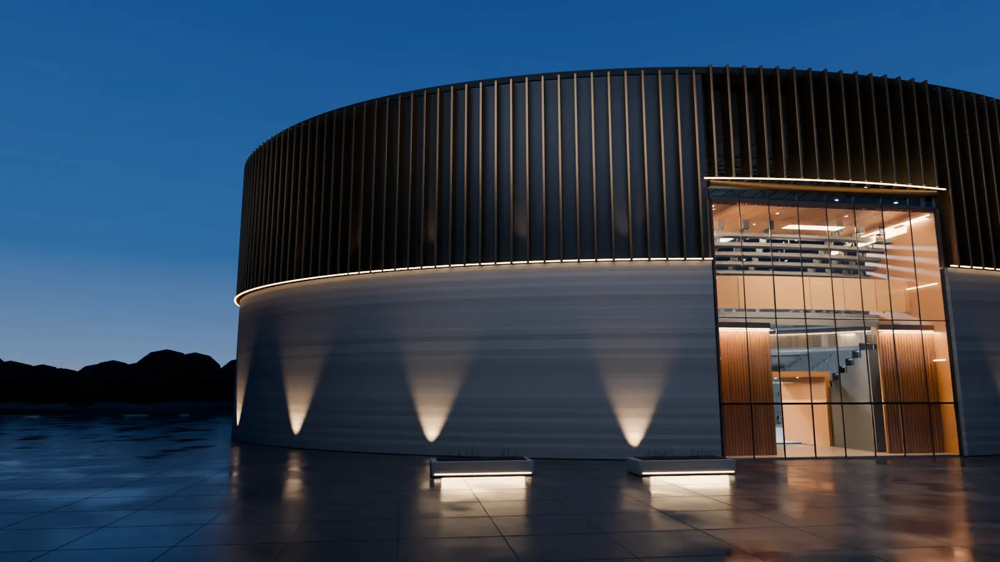

Hoang Viet To
Software Developer
I build web platforms and the systems behind them.
I work alone on my own products and with a team at SolidPixels. I use new tools early and hold their output to the same standard as my own.
GameOnVB
Less organising. More time on court.
My own product, built end to end: registration, payments and attendance for recurring volleyball sessions.
View projectGoal Loop
Speed with hard checks.
My delivery system for software. Several models build, critique and review the work, and every result passes explicit checks or is blocked.
View projectGoal Loop
One run, start to finish.
Check found a crack. Build used one of the two repair pieces, the same Check passed, and Review confirmed the fit.
View projectScreen Switch
Small tools, finished properly.
A native macOS menu-bar utility that swaps eligible windows between displays.
Playground
Interaction, studied closely.
Two interactive experiments: Hot Wire, a 3D skill game, and Giant Impact, an artistic study of how the Moon formed.
Open playgroundMedia unavailable or stalled. The last valid still is shown. You can continue or skip.
Beyond the arena
Systems that work in the real world.
Registration. Payments. Attendance.